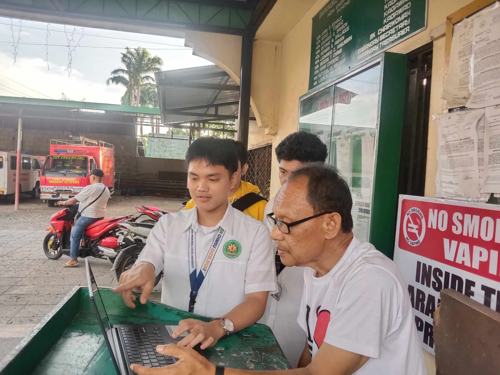

Our first project introduction, the beginning of our journey
It was our first experience being part of this journey, a capstone
proposal, although our system and manuscript need to be revised for
the vast majority. It might seem overwhelming, nerve-racking, and
incompetent, but it is definitely worth it. It took an hour and a half
to complete the process deliberately.
Discussion with our Client
After numerous revisions and almost an hour and a half of standby, we
invited our client to review the system we developed, which was
designed to provide security and safeguards for the Driver’s
Identification System in their residence. This ensured our objectives
aligned with their expectations.
